Forest products and bioenergy in California
The role for UC research and extension
Peter W. Tittmann, Ph.D.
Candidate overview
- Breadth of research expereince
- Experienced in a broad range of analytical methods
- In-depth knowledge of California
- Forest, climate and energy policy
- Track record in Cooperative Extension
- Developed Woody Biomass group extension program
A Timely Challenge
Accelerating pace of ecological change
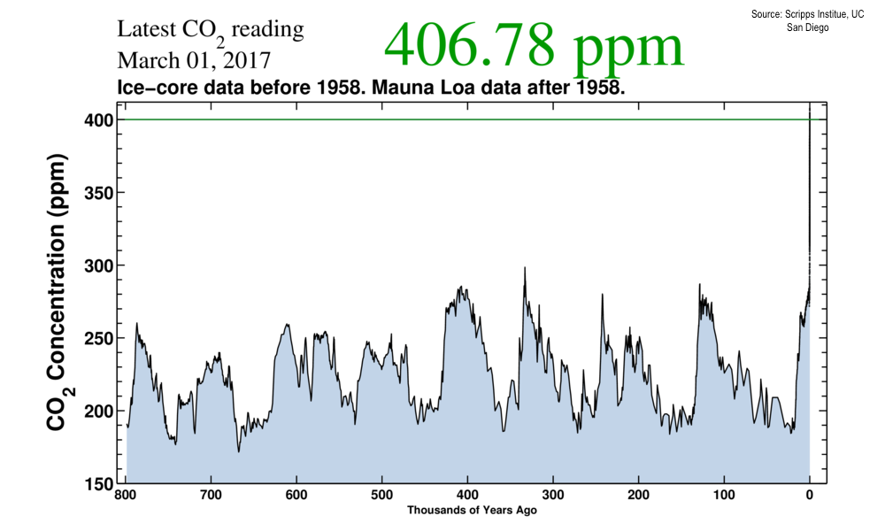
California's unique climate
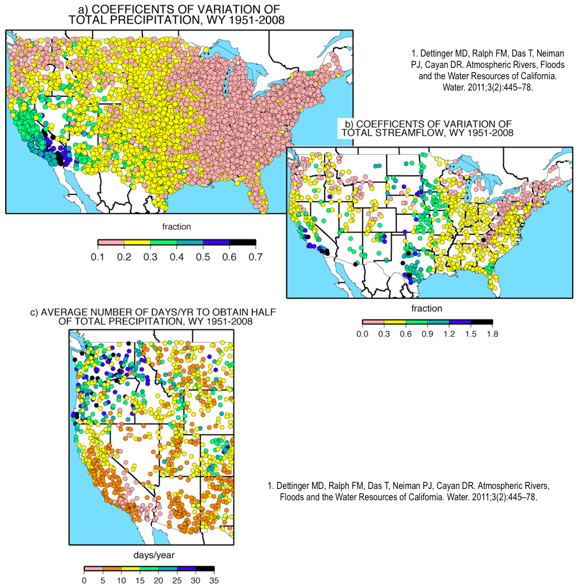
Bark Beetle
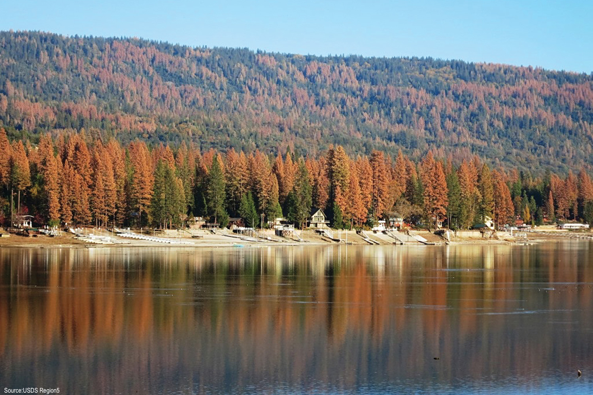
Sudden Oak Death
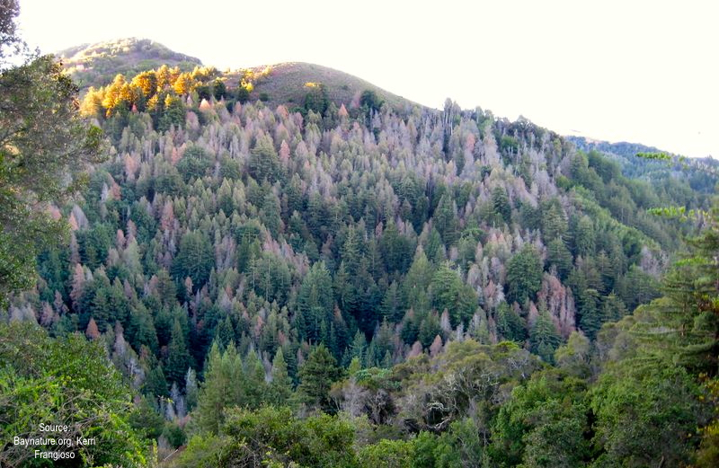
Gold-spotted Oak Borer
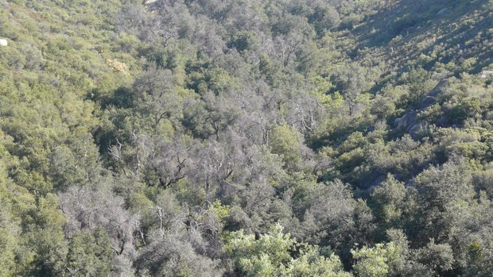
Declining wood utilization infrastructure
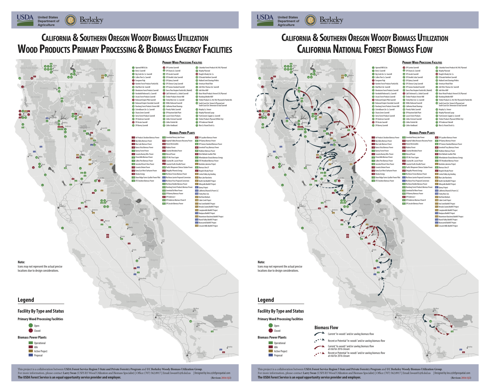
California forest products industry
| State | Rough lumber (%) | Surfaced lumber (%) |
|---|---|---|
| CA | 34 | 65 |
| ID | 3 | 97 |
| MT | 4 | 96 |
| OR | 5 | 95 |
| WA | 4 | 96 |
Projected demand for biofuel

Carbon intensity of biofuels
<graphic>
Decline in biomass power in CA Renewables Portfolio Standard
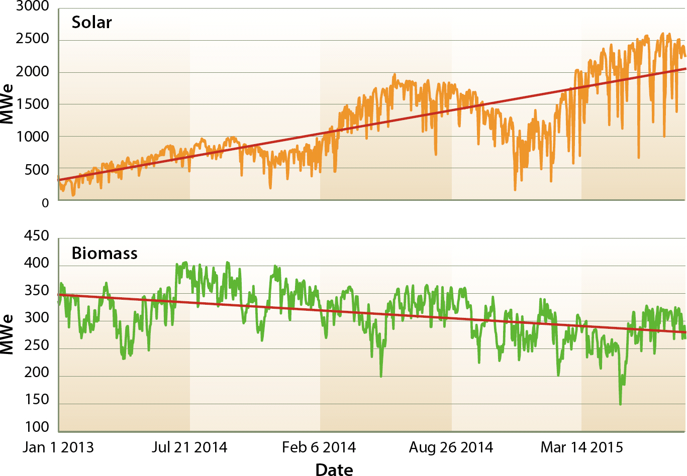
Past Research Themes
- Geospatial
- LiDAR in Forestry
- Big spatial data
- Wood science
- Redwood properties
- Industrial Ecology
- Regional/National bioenergy planning
- Biomass feedstock supply
- Climate impacts of roundwood harvesting
- Life-cycle analysis of forest management decisions
Geospatial analytics
Remote Sensing
- LiDAR
- Timber/carbon inventory
- Hyperspectral imagery
- Fire intensity
Spatial Analysis
- Spatial clustering
- Network analysis
- Big geospatial data
LiDAR as a tool for Forest Management
- Individual tree detection and delineation
- Geometric shape-fitting
- RAndom Sample and Consensus (RANSAC)
1. Tittmann P, Shafii S, Hartsough B, Hamman B. Tree detection, delineation, and measurement from LiDAR point clouds using RANSAC. In: Hirata Y et al., editor. Proceedings of Eleventh International Conference on LiDAR Applications for Assessing Forest Ecosystems (SilviLaser 2011) [Internet]. Hobart; 2011.
RANSAC

3d model
\(f(x,y) = -\lambda (x^2 + y^2) + (\lambda -1)\sqrt{x^2+y^2}\)
\(\lambda\) = Shift parameter between conic and parabolic shapes

RanSAC Model results
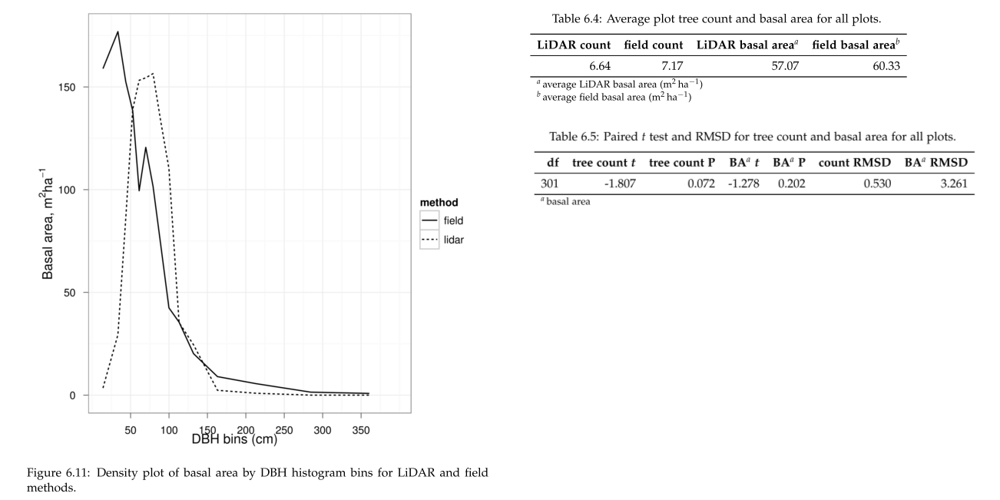
Mapping wildfire loss in commercial timberland

Big Geospatial Data
<Foo>
Utilization of Biomass from tree mortality
Collaborators: Carmen Tubbesing (Ph.D. Candidate ESPM), Eng. Jose Lara (Ph.D. Candidate Energy and Resources)
Funded by: California Energy Commission
- Translate Aerial Detection Survey mortality to biomass volume @30m statewide
- Model harvest and transport costs
- Evaluate substation-level distribution capacity for small scale (<3MW) biomass power.
Mapping Mortality


Spatial Clustering


Modeling harvest operations cost
Yarding distance
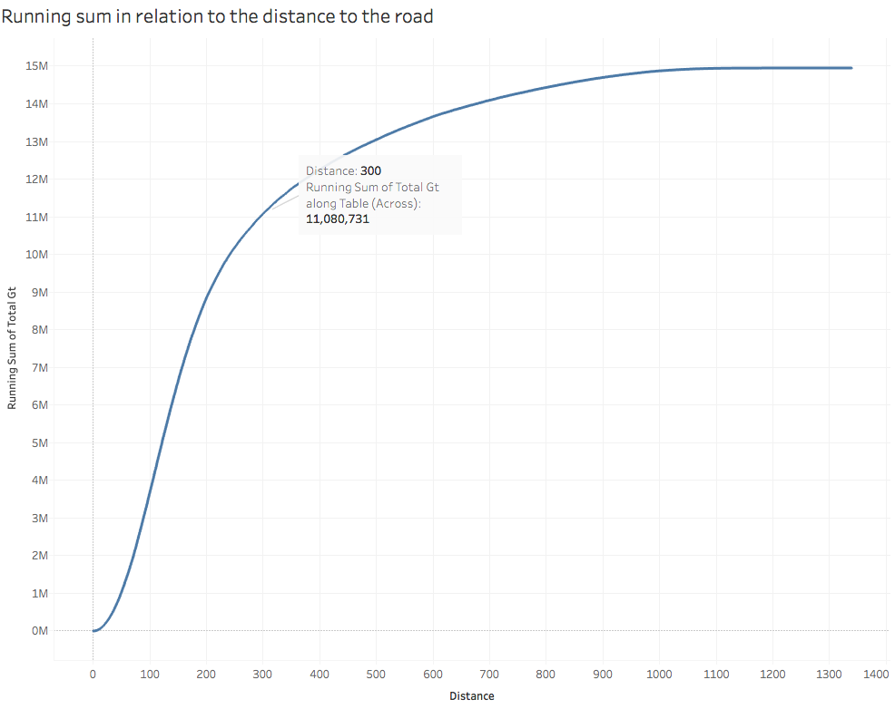
Slope
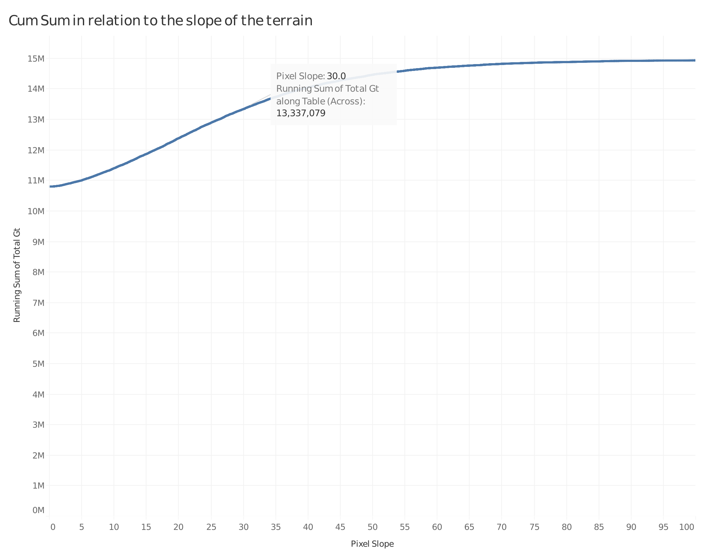
Cluster-level supply curve
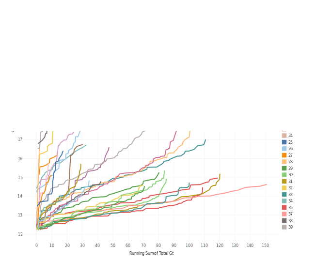
Wood Properites
Redwood Properties: NZ vs CA
Calculate Modulus of Elasticity (MOE) and modulus of Rupture (MOR) for redwood samples from New Zealand and California

Industrial Ecology of wood bioenergy systems
- Techoeconomic systems analysis
- Spatial operations research
- Life-cycle analysis
Emissions from forests: A conceptual model
Tittmann, P., & Yeh, S. (2013). A Framework for Assessing the Lifecycle Greenhouse Gas Benefits of Forest Bioenergy and Biofuel in an Era of Forest Carbon Management. Journal of Sustainable Forestry, 32(1–2), 108–129
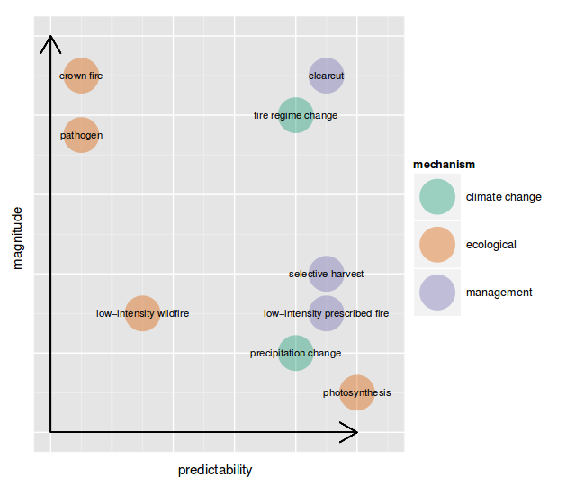
Stand carbon flows
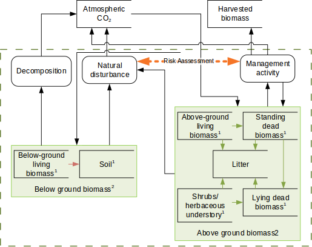
Forests product syetsm
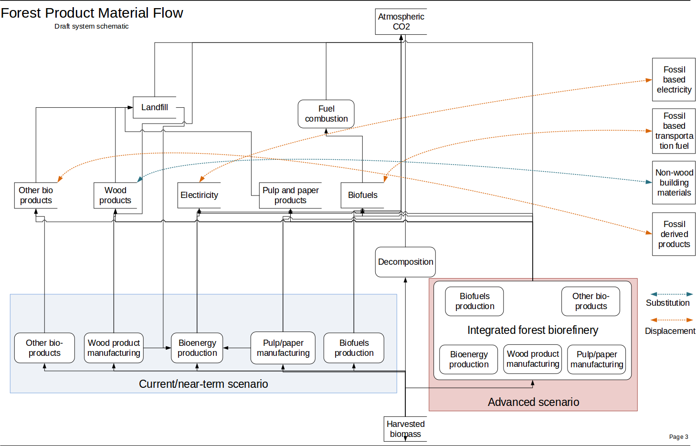
Impact of torrefaction on biomass supply chains
- Multi-modal transportation network model
- Techno-economic model of torrefaction at 5 scales
- Mixed integer-linear optimization of location and scale
Li Y, Tittmann P, Parker N, Jenkins B. Economic impact of combined torrefaction and pelletization processes on forestry biomass supply. GCB Bioenergy [Internet]. 2016 Jul [cited 2016 Aug 11]; Available from: http://doi.wiley.com/10.1111/gcbb.12375
Impact of torrefaction on feedstock supply
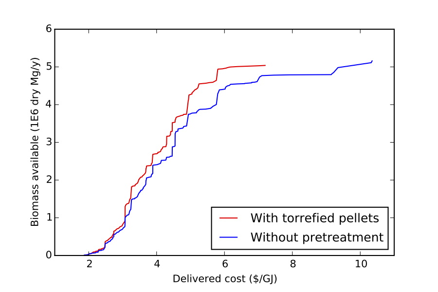
Spatial dynamics of torrefaction pre-treatment
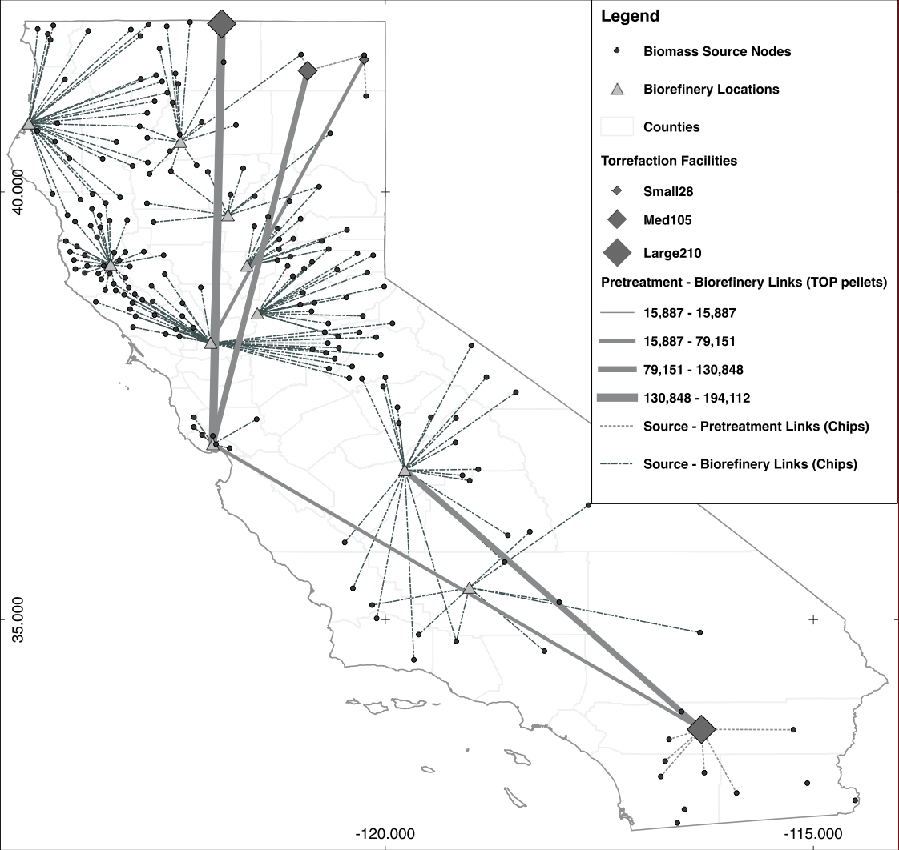
Mapping biomass supply
Jenkins, B. M., Williams, R., Parker, N., Tittmann, P., Hart, Q., Gildart, M., Dempster, P. (2009). Sustainable use of California biomass resources can help meet state and national bioenergy targets. California Agriculture, 63(4), 168–177.
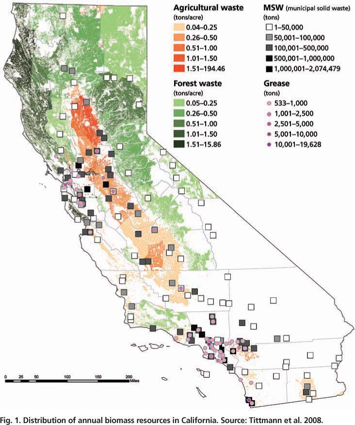
Spatail/Technoeconomic Bioenergy Modeling
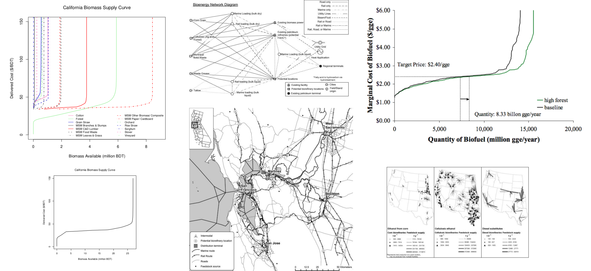
Western US
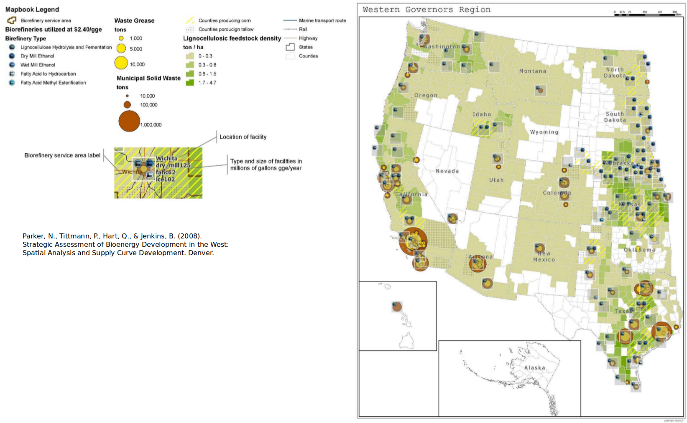
California
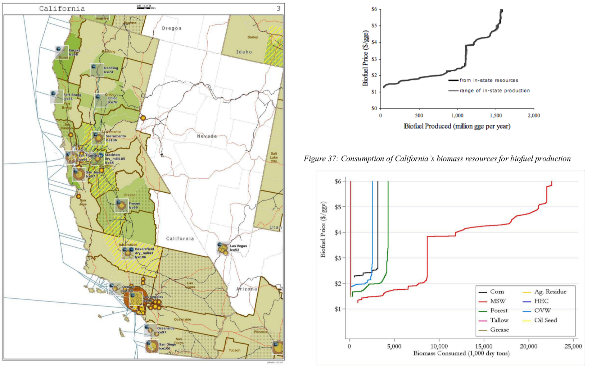
Biofuel vs. biopower in CA
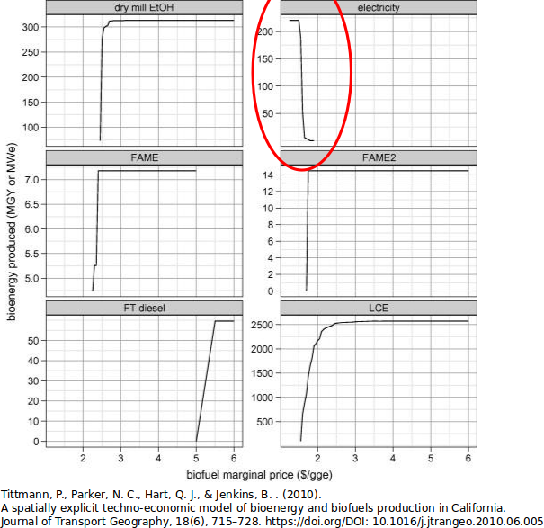
Climate impacts of roundwood harvesting
Research Goals
- Estimate Short-Lived Climate Pollutant emissions from pile burning
- Estimate GHG emiddions from roundwood harvest in California inclusive of displacement of alternative building materials.
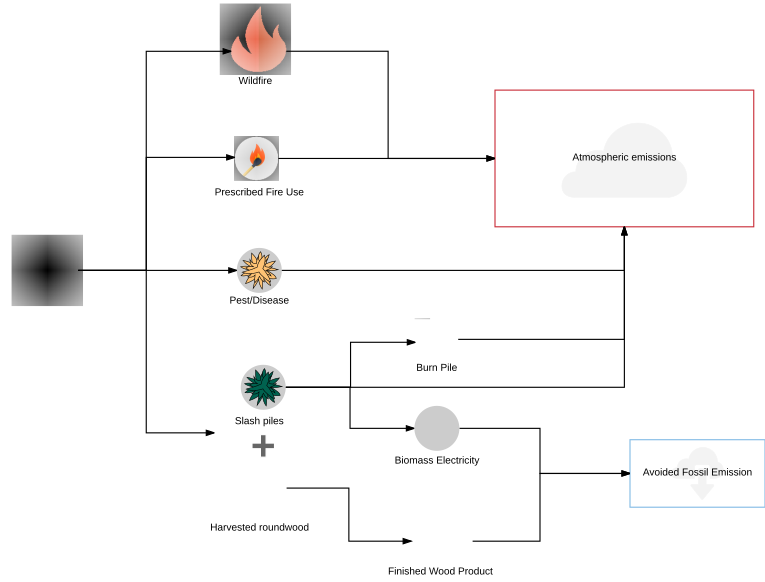
Analysis Framework
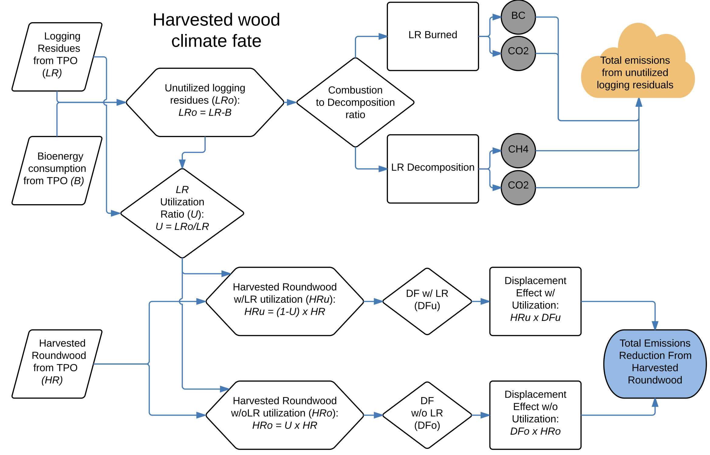
Key Findings
- Different estimates of SLCP emissions from different sources (CARB vs. BOE)
- Roundwood harvest likely results in a net emissions reduction compared to no harvest assuming sustained yield forestry and no land conversion.
- Critical need for imporved data and monitoring:
- Emissions
- Black and brown carbon emissions from pile, prescribed and wildfire
- Displacement
- Need better understanding of wood and energy use in residential/commecial construction specific to California.
Different estimates
Divergence between BOE and CARB based estimates
- Air Resources Board
- Criteria Pollutant Emissions Inventory
- 2.5 MMT CO2e
- Board of Equalization
- Historical harvest data from timber tax records
- 0.57 MMTCO2e
Emissions reduction
- Wood harvested in California in 2012 resulted in avoided emissions of 2.29 MMTCO2e
- Timber harvest producing roundwood including emissions from pile burning of logging residuals results in a net emissions reduction of 1.93 MMTCO2e
Historical emissions reductions from harvest
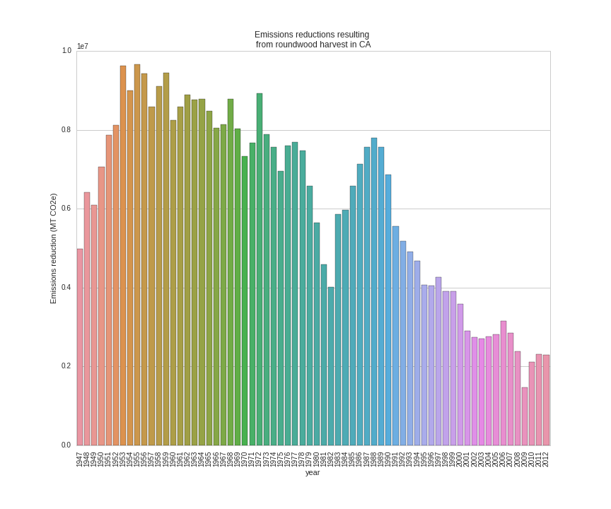
Extension Experience
- Technology Transfer
- Web/mobile decision support applications.
- Direct technical assistance
- Public Education and Outreach
- Targeted industry outreach
- Public workshops and conferences
- Extension publications
- Policy Engagement
- Synthesis and and interpretation of research findings for policy initiatives
Technology transfer
A few examples..
pymiata: Forestry equipment cost calculator
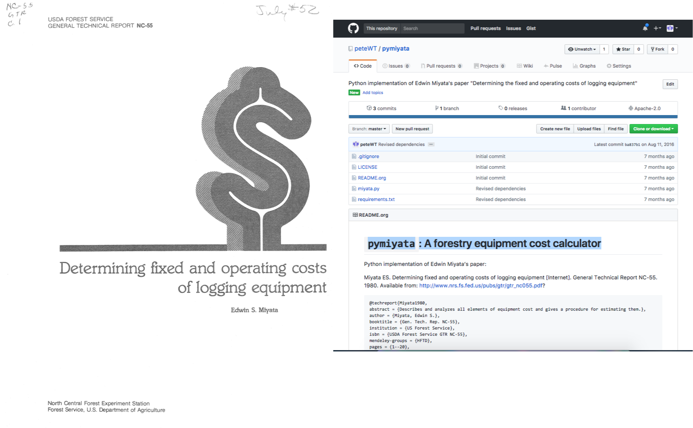
pymiyata Example
| Manufacturer | Model | Initial investment ($) | Salvage Value($) | Economic Life (years) | Scheduled Operating Time (hrs/year) | Productive Time (hrs/year) | Utilization Rate | Use Cost ($/PMH) |
|---|---|---|---|---|---|---|---|---|
| Fecon | FTX128 | 200000 | 40000 | 5 | 1872 | 1215.36 | 0.649230769 | 74.318588 |
| Kaiser | S2-2 | 374000 | 74800 | 5 | 1872 | 1215.36 | 0.649230769 | 115.7630803 |
| FAE - Prime Tech | PT-175 | 255000 | 51000 | 7.5 | 1872 | 1215.36 | 0.649230769 | 76.47029789 |
| Takeuchi | TL12CRH | 118056 | 23611.2 | 8 | 1872 | 1248 | 0.666666667 | 44.96581 |
| Caterpillar | 299D XHP | 144200 | 30000 | 5 | 1872 | 1215.36 | 0.649230769 | 59.3833117 |
| Takeuchi | TB290CL | 137949 | 27589.8 | 8 | 1872 | 1215.36 | 0.649230769 | 44.51276035 |
| John Deere/Fecon | JD210 with BH80EXC | 270000 | 54000 | 20 | 1872 | 1560 | 0.833333333 | 60.50512261 |
| 2000 Timbco Feller Buncher | 425D | 505000 | 101000 | 10 | 1872 | 1755 | 0.9375 | 101.0949626 |
Advanced Hardwood Biofuels Northwest
- Decision support for biorefinery siting
- Transportation routing
- Poplar growth model
- Soils
- Climate
- Biorefienery cost model (Jet Fuel, Ascetic Acid)
- Detailed farm budgets
- Crop switching
Project Technical Assistance
Camptonville Community Partnership
- 3 MW combined heat and power
- Assisted with successful grant proposal assistance
- Assisted with technology due diligence
IHI Power: Rio Bravo Rocklin
- 25 MW Biomass Power plant
- Proposal to compare urban and forest feedstock impact on O&M costs
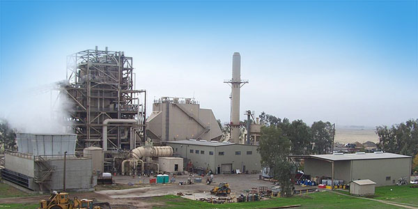
Statewide Assistance
Statewide Wood Energy Team
- Assisted writing successful proposal to establish wood energy team in California
- Reviewed applications for pre-feasibility grants
- Provided technical assistance to grantees
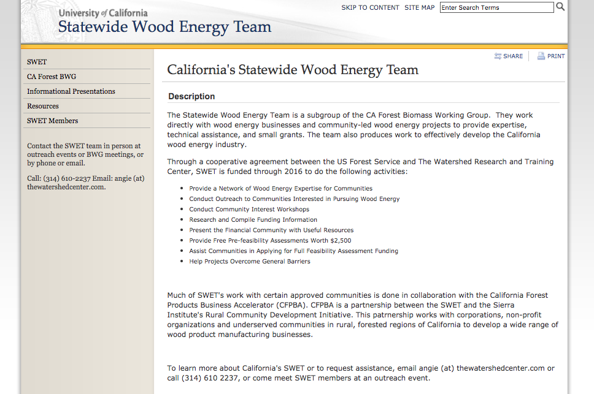
California wood business opportunities analysis
- Steering committee member
- USFS R5 – Funded Project

California Biomass Working Group
- Sub-committee Chair (2015) Policy and Existing Infrastructure
- Worked closely with utilities and power producers
Public Education and Outreach
Biomass power and forest products industry
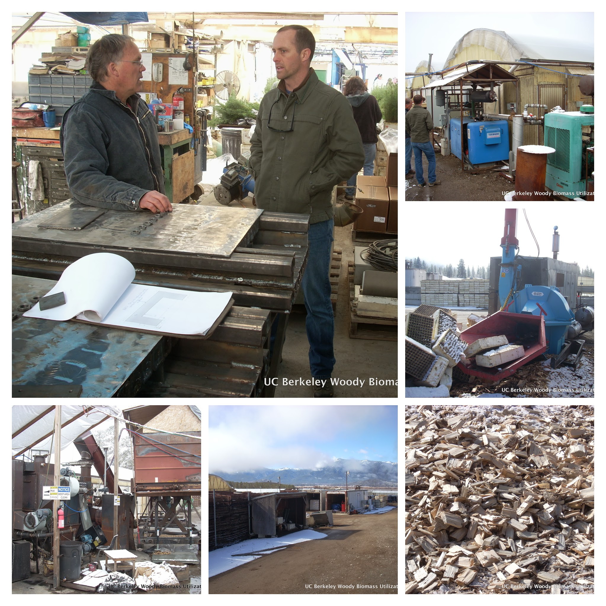
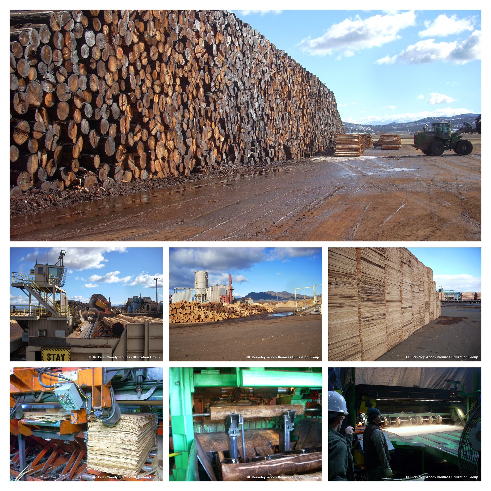
Forest Products and Bioenergy Research and Extension: A Strategic Vision
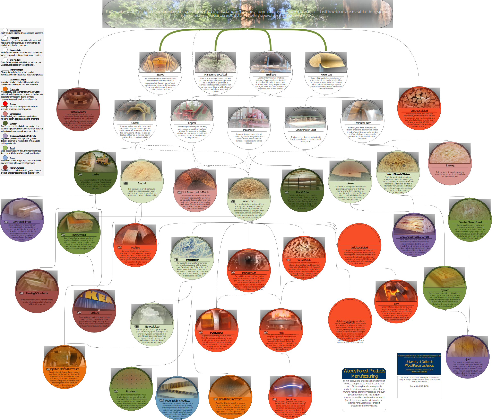
Treats to the UCANR Mission
- Void in science-based knowledge filled by ideologically driven groups
- "Cottage" extension programs
- Speed of information flow
- Deficit in scientific knowledge in general public.
Strategies
Applied Research
- Carbon Cycle of Wood Products
- Efficiency and conservation in the forest products sector
- Innovation in wood products and product supply chains
Extension
- Work to increase broad public awareness of the role of wood and forests in meeting emissions reduction targets while meeting the material demands of the world’s sixth-largest economy
- providing technical tools, domain expertise, and applied research to the CE client base.
Outreach and education
- Engage immigrant and non-white community client base in the forestry sector through bilingual publication and workshop materials
- Engage advocacy community where there is common ground.
- Grow interest in California wood and forest products in urban communities through outreach to design community.
Notes
Treats: Lack of external awareness of UC ANR • Other agencies filling void without sciencebased knowledge • Cost of living and labor in California • “Cottage Extension Programs” on other UC campuses – lack of coordination and collaboration • Speed of information flow – quantity and quality • General population lacks scientific knowledge • California water concerns "The general disciplinary focus of this position is the sustainable use of forest and wood resources."
"The general disciplinary focus of this position is the sustainable use of forest and wood resources. Priority issues include life-cycle assessments and carbon cycles of forest products including wood-based bioenergy, efficiency and conservation in forest products and bioenergy technology, and the impacts of utilization on community development, economic, and environmental concerns. The CE Specialist in Forest Products and Biomass will develop and promote methods for efficient and environmentally acceptable utilization of wood resources and woody biomass and analyze the impacts of forest management practices and utilization on the ability of the state to meet its greenhouse gas emission goals. "
John notes:
- Take credit, explain role
- Dont run long shoot for 40 minutes
- Talk about forest products
- List forest products
- Life cycle analysis
- Importance of forest products in climate policy
- Results slide for Redwood